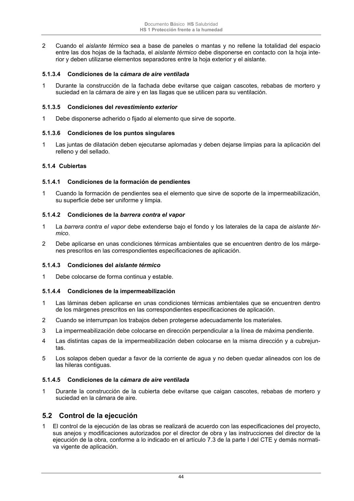

DB-HS · Página 44 · versión 2022-06-14
SHA256: 68df3caacc95f71aee2ec1ba7b2c65ae66155c21e3a8785521b8fdd4fd640d3b · página física 44 de 184 · métodos de encabezado
solo si están cotejados.
Formatos: Markdown · JSON de bloques · PDF p. 44 · imagen PNG
Documento Básico HS Salubridad HS 1 Protección frente a la humedad 44 2 Cuando el aislante térmico sea a base de paneles o mantas y no rellene la totalidad del espacio entre las dos hojas de la fachada, el aislante térmico debe disponerse en contacto con la hoja inte- rior y deben utilizarse elementos separadores entre la hoja exterior y el aislante. 5.1.3.4 Condiciones de la cámara de aire ventilada 1 Durante la construcción de la fachada debe evitarse que caigan cascotes, rebabas de mortero y suciedad en la cámara de aire y en las llagas que se utilicen para su ventilación. 5.1.3.5 Condiciones del revestimiento exterior 1 Debe disponerse adherido o fijado al elemento que sirve de soporte. 5.1.3.6 Condiciones de los puntos singulares 1 Las juntas de dilatación deben ejecutarse aplomadas y deben dejarse limpias para la aplicación del relleno y del sellado. 5.1.4 Cubiertas 5.1.4.1 Condiciones de la formación de pendientes 1 Cuando la formación de pendientes sea el elemento que sirve de soporte de la impermeabilización, su superficie debe ser uniforme y limpia. 5.1.4.2 Condiciones de la barrera contra el vapor 1 La barrera contra el vapor debe extenderse bajo el fondo y los laterales de la capa de aislante tér- mico. 2 Debe aplicarse en unas condiciones térmicas ambientales que se encuentren dentro de los márge- nes prescritos en las correspondientes especificaciones de aplicación. 5.1.4.3 Condiciones del aislante térmico 1 Debe colocarse de forma continua y estable. 5.1.4.4 Condiciones de la impermeabilización 1 Las láminas deben aplicarse en unas condiciones térmicas ambientales que se encuentren dentro de los márgenes prescritos en las correspondientes especificaciones de aplicación. 2 Cuando se interrumpan los trabajos deben protegerse adecuadamente los materiales. 3 La impermeabilización debe colocarse en dirección perpendicular a la línea de máxima pendiente. 4 Las distintas capas de la impermeabilización deben colocarse en la misma dirección y a cubrejun- tas. 5 Los solapos deben quedar a favor de la corriente de agua y no deben quedar alineados con los de las hileras contiguas. 5.1.4.5 Condiciones de la cámara de aire ventilada 1 Durante la construcción de la cubierta debe evitarse que caigan cascotes, rebabas de mortero y suciedad en la cámara de aire. 5.2 Control de la ejecución 1 El control de la ejecución de las obras se realizará de acuerdo con las especificaciones del proyecto, sus anejos y modificaciones autorizados por el director de obra y las instrucciones del director de la ejecución de la obra, conforme a lo indicado en el artículo 7.3 de la parte I del CTE y demás normati- va vigente de aplicación.
